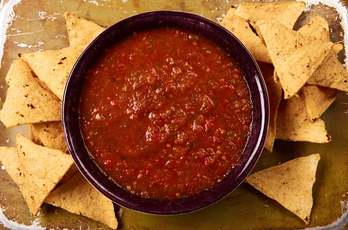

Mexican Salsa

Description
This recipe is an authentic method of making mexican salsa. The combination of fresh vegetables makes for a healthy snack. This salsa recipe can have the spicy level scaled as necessary for your palate. (See ingredients below).
Ingredients
- 8 Jalapenos or 6 Serrano Peppers
- 8 oz can of San Marzano Tomatos
- 1 Small Fresh Tomato
- 1 Bunch of Cilantro
- 1 6 oz Can of Green Chiles
- Salt for Taste
Steps
- Add peppers to blender and blend as much as possible without mushing them.
- Add San Marzano Tomatos, Fresh Tomatos, Green Chiles, and Cilantro to blender.
- Blend the combined ingredients until desired consistency. Blend less if chunky salsa is desired.
- Salt as needed per taste.